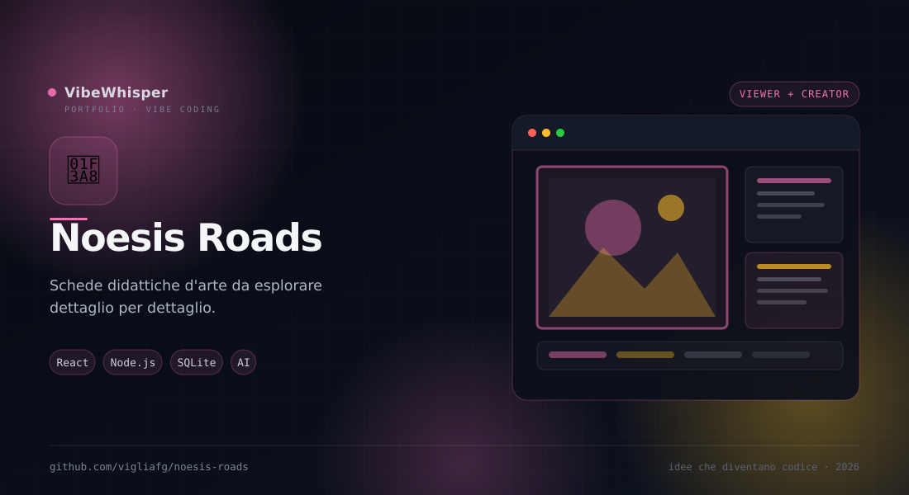

Noesis Roads
Viewer didattico per esplorare opere d'arte dettaglio per dettaglio, con schede generate e pubblicate da noesis-roads-creator.
📖 Cos'è
Noesis Roads è un viewer didattico per esplorare opere d'arte dettaglio per dettaglio. La collezione e i contenuti — presentazione, sezioni per ogni dettaglio su due livelli, opere simili, immagini — arrivano dalle schede pubblicate con noesis-roads-creator. Il viewer legge il database SQLite in sola lettura e presenta testi già verificati, senza generazione al volo. Accanto alle schede d'arte supporta schede generiche per altre materie, con un renderer unico e modelli dichiarativi.
👤 A chi serve
È pensata per insegnanti di storia dell'arte, musei, studenti e divulgatori che vogliono raccontare un'opera per dettagli invece di mostrare una singola immagine. È utile anche a chi costruisce materiale didattico multidisciplinare: la stessa pipeline può pubblicare schede di filosofia o di altre materie senza scrivere codice nuovo.
⚙️ Come funziona
Il launcher avvia due programmi indipendenti e un hub: il viewer su :18000 legge le schede ready dal DB del creator; il creator su :18100 gestisce la pipeline AI di generazione e pubblicazione. Il server del viewer espone /api/library, /api/artworks/:id, /api/subjects/:id, /api/comparisons/:id e le API delle schede generiche, leggendo SQLite in sola lettura. Alla pubblicazione il creator genera miniature composite con Pillow; il viewer non scrive mai nel database.
🎯 Perché Noesis Roads
Perché un'opera si capisce guardando i particolari, non solo l'insieme. Noesis Roads organizza il racconto in dettagli, confronti e contesto storico, e separa la generazione dei contenuti (creator) dalla lettura (viewer): quello che vedi è stato verificato prima di essere pubblicato.
✨ Caratteristiche Principali
- Lettura per dettagli — Immagine annotata, chip dei dettagli e due tab: Studio del dettaglio e Approfondimento
- Opere simili — Carosello con le opere che condividono lo stesso soggetto, lette dal DB
- Soggetto nella storia — Timeline per epoche, origini iconografiche, opere rappresentative e simboli ricorrenti
- Faccia a faccia — Confronto critico tra due opere, con punti in comune, differenze, tecnica e contesto
- Schede generiche — Nucleo per qualsiasi materia: materie, modelli, sezioni e immagini senza codice ad hoc
- Creator con pipeline AI — Riconoscimento, dettagli, tab, presentazione e simili, con editor e approvazione
- Sola lettura — Il viewer apre connessioni SQLite read-only e non scrive mai nel database
- Hub e installer — Un launcher con due bottoni e stato dei server, più
install.mjsmultipiattaforma - Export — Miniature composite e PDF generati dalla pipeline di pubblicazione
🏗️ Come Funziona
- Clona il repository e lancia
node install.mjsper verificare Node, Python e dipendenze - Avvia
node launcher.mjs: l'hub si apre su http://127.0.0.1:18080 - Da «Vedi le schede» apri il viewer su :18000; da «Crea le schede» apri il creator su :18100
- Nel creator carica un'immagine e segui la pipeline: riconoscimento, dettagli, presentazione, simili
- Approva la scheda: solo gli elementi
readycompaiono nel viewer - Il viewer legge il DB in sola lettura: puoi esplorarlo senza rischiare di modificarlo
📦 Installazione
# Requisiti: Node.js >= 22.5 (usa node:sqlite) # Opzionale: Python 3 + Pillow e reportlab per gli export git clone https://github.com/vigliafg/noesis-roads.git cd noesis-roads # Installer multipiattaforma (consigliato) node install.mjs # Avvio di hub + viewer + creator node launcher.mjs # Hub: http://127.0.0.1:18080 # Viewer: http://127.0.0.1:18000 # Creator: http://127.0.0.1:18100 # Avvio separato node server.mjs node noesis-roads-creator/server.mjs
💡 Casi d'Uso
- Didattica dell'arte — Raccontare un'opera per dettagli, con approfondimenti e fonti
- Musei e mostre — Preparare schede leggibili e coerenti per una collezione
- Confronti — Mettere due opere faccia a faccia e evidenziare differenze e continuità
- Altre materie — Usare il nucleo generico per schede di filosofia o di altre discipline